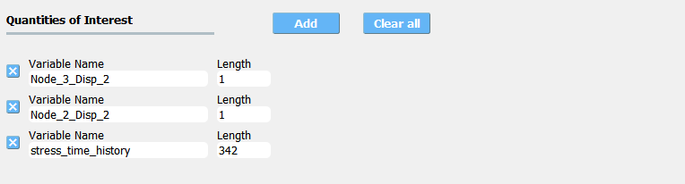

3.4. QoI: Quantities of Interest
The QoI tab is where the user specifies the variable names associated with the FEM (model) simulation results. The user must provide variable names and specify their lengths. The result quantity might be a scalar (i.e. of length 1) or a vector/field quantity (i.e., of length > 1). Having vector/field variables can be convenient when the user is interested in high-dimensional output. In most of the algorithms supported in quoFEM, as long as the sum of the lengths matches the number of output produced by the model (i.e. the number of entries written in results.out), the resulting UQ output will be the same. However, in the following methods, the results/display may be different if a vector/field variable is introduced instead of multiple scalar variables.
Transitional Monte Carlo (USCD-UQ) - changes the covariance structure
Sensitivity analysis (SimCenter-UQ) - changes the aggregated Sobol indices
A new response quantity is added by the user selecting the Add button. Quantities can be removed by clicking the x button in front of each variable name.

Fig. 3.4.1 Input for the QoI tab.
For example, in Fig. 3.4.1, the user has defined three response quantities, Node_2_Disp_2, Node_4_Disp_1, and stress_time_history. Since the total length of QoIs is 344, quoFEM expects to have 344 values in the results.out as the model output. The first two quantities correspond to Node_2_Disp_2 and Node_4_Disp_1, and the following 342 quantities should be stress_time_history. Alternatively, instead of having one vector variable stress_time_history, the user may want to divide this into multiple variables with a smaller length. The analysis will run successfully as long as the sum of the length values is equal to 344.
If a postprocessing Python script has been provided in the FEM tab, it will be passed these three names as arguments.
Warning
There can be no spaces in variable names, underscores are permitted.
Names cannot begin with a numeral, i.e. 0, 1, 2, 3, 4, 5, 6, 7, 8, 9.
Names cannot be duplicated.
3.4.1. Video Resources
Recorded in tool training, 2022.